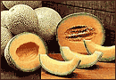

Три вспышки инфекций, связанные с употреблением в пищу импортируемой из Мексики канталупы (мускусной дыни), инфицированной Salmonella рoona, указывают на вероятность природных резервуаров этого возбудителя вблизи мексиканских ферм. По-видимому, резервуаром инфекции служат рептилии, такие как игуаны, которые проникают на склады и контаминируют продукты и оборудование. Кроме того, вода, используемая для мытья и охлаждения продукции, также способствует распространению инфекции.
Управление по контролю за пищевыми продуктами и лекарственными средствами (FDA) США совместно с правительством Мексики разрабатывает специальную сертификационную программу для сельскохозяйственных продуктов в связи с регистрацией трех вспышек инфекций, связанных с употреблением в пищу импортируемой из Мексики канталупы (мускусной дыни), инфицированной Salmonella рoona. Такие вспышки отмечались на протяжении трех последних лет в весеннее время.
Salmonella poona может вызывать серьезные и иногда даже летальные случаи инфекций у детей раннего возраста, пожилых людей и пациентов с ослабленным иммунитетом. Симптомами заболевания являются лихорадка, диарея, тошнота, рвота и боли в животе. В редких случаях возбудитель может проникать в кровь и вызывать такие серьезные заболевания, как инфекции кровотока и инфекционный эндокардит. Согласно сообщениям Центров по контролю и профилактике заболеваний (CDC) США, наиболее часто заболевают дети.
В США в штатах Калифорния, Вашингтон, Невада, Нью-Мексико, Орегон и Колорадо были выявлены 47 подтвержденных случаев инфекций, вызванных S.poona, причем наибольшее число случаев заболевания приходилось на период с 14 апреля по 2 июня. Средний возраст заболевших составлял 7 лет, 28 пациентов были младше 10 лет, 9 пациентов были в возрасте 60 лет и старше.
Помимо приведенных выше данных, после обнаружения в апреле первого случая инфекции, вызванной S.рoona в Калифорнии, были зарегистрированы еще 50 случаев заболевания у жителей штатов Вашингтон, Невада, Аризона и Орегон.
Демографические и анамнестические данные 28 пациентов, полученные во время другой вспышки инфекции в Калифорнии, позволили определить, что заболевание началось в апреле и продолжалось до конца мая. Распределение пациентов по возрасту носило бимодальный характер: средний возраст 19 детей составил 3 года (от 1 до 5 лет), средний возраст 9 взрослых пациентов составил 80 лет.
CDC сообщили еще об одной вспышке инфекции, вызванной S.рoona, когда в штатах Калифорния, Вашингтон, Орегон, Британская Колумбия, Колорадо, Невада, Манитоба, Миссури, Онтарио, Саскачеван, Техас, Арканзас, Миннесота и Вермонт были зарегистрированы 58 случаев заболевания. Данная вспышка инфекции началась с конца марта и продолжалась до конца мая, наиболее часто заболевали дети.

Исследование методом случай-контроль, проведенное специалистами CDC, показало, что во время всех вспышек наиболее частым источником инфицирования являлась канталупа (мускусная дыня). На основании этих данных 28 октября 2002 г. FDA США распространило специальное предупреждение, запрещающее ввоз канталупы из Мексики на территорию США.
Представители CDC сообщили о том, что три вспышки заболевания, связанного с употреблением в пищу импортируемой из Мексики канталупы, инфицированной S.рoona, указывают на вероятность природных резервуаров данного возбудителя вблизи мексиканских ферм. По-видимому, резервуаром инфекции служат рептилии, такие как игуаны, которые проникают на склады и контаминируют продукты и оборудование. Кроме того, вода, используемая для мытья и охлаждения продукции, также способствует распространению инфекции.
Multistate outbreaks of Salmonella serotype poona infections associated with eating cantaloupe from Mexico - United States and Canada, 2000-2002.
MMWR. 51 (46); 1044-1047.